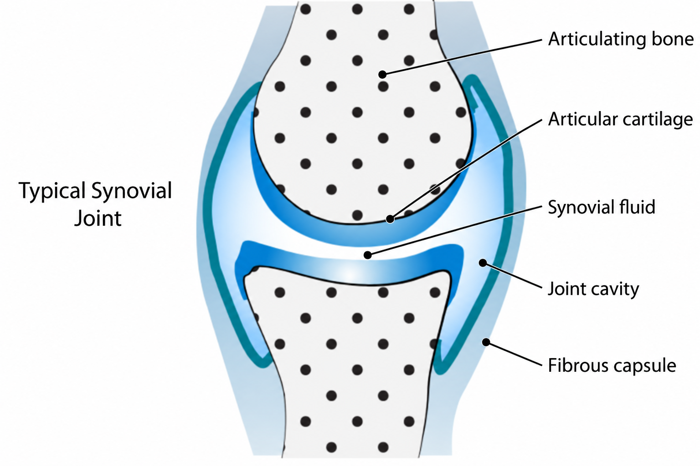
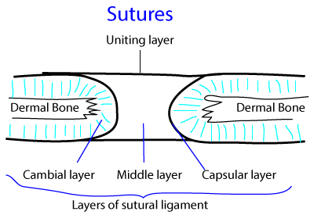

Joints
Classification of joints
Fibrous joints
- Lacks intervening cartilage between bones
- Fixed
- Very restricted movements
Cartilaginous joints
- Have a cartilage in between the articulating parts
- Relatively mobile
- Restricted movements
Synovial joints
- Bones involved are linked by a fibrous capsule
- Articulating bony surfaces are generally not in direct continuity
- Covered by hyaline articular cartilage of varying thickness
- Very low coefficient of friction- free movement
- Viscous synovial fluid - acts as a lubricant + cellular maintenance
- Synovial membrane - defining characteristics of the joint type
Synovial joints - general features
Typical features of a synovial joint
- Bones involved are linked by a fibrous capsule
- Articulating bony surfaces are generally not in direct continuity
- Covered by hyaline articular cartilage of varying thickness
- Very low coefficient of friction- free movement
- Viscous synovial fluid - acts as a lubricant + cellular maintenance
- Synovial membrane - defining characteristics of the joint type
Articular surfaces
- Formed by a specialization of hyaline cartilage
- Parts of cartilaginous models in embryonic life
- Articular cartilage has a wear-resistant, low-frictional, lubricated surface
- Compressible and elastic
- Ideally constructed for easy movement
- Young cartilages are typically white, smooth, glistening and compressible,
- Ageing cartilages are thinner, less cellular, firmer and more brittle, with a less regular surface and a yellowish opacity
Fibrous capsule
- Completely encloses a joint except where it is interrupted by synovial protrusions
- Composed of interlacing bundles of parallel fibres of white collagen
- Attached continuously round the ends of the articulating bones
- Capsule is perforated by vessels and nerves
- It is lined by a synovial membrane
- Fibrous capsule usually exhibits local thickenings - capsular (intrinsic) ligaments

Figure: typical synovial joint
Synovial membrane
- Lines fibrous capsules and covers exposed osseous surfaces, intracapsular ligaments, bursae and tendon sheaths
- It does not cover intra-articular discs or menisci and stops at the margins of articular cartilages
- Synovial membrane secretes and absorbs a fluid that lubricates the movement between the articulating surfaces.
- Composed of a cellular intima resting on a fibrovascular subintimal layer (subsynovial tissue).
- Synovial cells are generally elliptical and have numerous cytoplasmic processes.
- Type A and type B synovial cells, are responsible for synthesizing some of the components of the synovial fluid.
- Type A cells are macrophage-like cells
- Type B synovial cells resemble fibroblasts
- Type B synovial cells – predominate
Synovial fluid
- Occupies synovial joints, bursae and tendon sheaths
- Clear or pale yellow, viscous, slightly alkaline at rest (the pH lowers during activity), and contains a small mixed population of cells and metachromatic amorphous particles
- Fluid volume is low: usually less than 0.5 ml can be aspirated from a large joint such as the knee.
- Composition
- Protein (approximately 0.9 mg/100 ml)
- Hyaluronan - determinant of the viscoelastic and thixotropic (flow rate dependent) properties
- Synovial protein - produced by synovial type B cells
- Specialized lubricating glycoprotein
- Few cells (approximately 60 per ml in resting human joints), including monocytes, lymphocytes, macrophages, synovial intimal cells and polymorphonuclear leukocytes: higher counts are found in young individuals
Intra-articular menisci, discs and fat pads
- Consists of fibrocartilage where the fibrous element usually predominates, and is not covered by synovial membrane.
- Nomenclature
- Term 'Meniscus' should be reserved for incomplete discs, like those in the knee joint and, occasionally, in the acromioclavicular joint.
- Complete discs, such as those in the sternoclavicular and inferior radio-ulnar joints, extend across a synovial joint, dividing it structurally into two synovial cavities; they often have small perforations.
- The disc in the temporomandibular joint may be complete or incomplete.
- Labrum is a fibrocartilaginous annular lip, usually triangular in cross-section, attached to an articular margin (e.g. Glenoid fossa and acetabulum).
- Fat pads are soft and change shape to fill joint recesses that vary in dimension according to joint position
- Disc is relatively acellular
Vascular supply and lymphatic drainage
- Periarticular arterial plexuses whose numerous branches pierce the fibrous capsules to form subsynovial vascular plexuses.
- The circulus articularis vasculosus
- Lymphatic plexus in the synovial subintima drains along blood vessels to the regional deep lymph nodes.
Innervation
Hilton’s law - A movable joint is innervated by articular branches of the nerves that supply the muscles acting on the joint and that also supply the skin covering the joint
Each nerve innervates a specific part of the capsule.
- Region made taut by muscular contraction is usually innervated by nerves that supply the antagonists
- Myelinated axons in articular nerves innervate Ruffini endings, lamellated articular corpuscles and structures resembling Golgi tendon organs
Classification of synovial joints
1. Plane synovial joint: Intermetacorpal joints
2. Hinge joints: Interphalangeal joints
3. Pivot joints: Superior radioulnar joint
4. Bicondylar joint: Knee joint
5. Ellipsoid joint: Radiocarpal joints, Metacarpophalangeal joints
6. Saddle joint: Carpometacarpel joint of thumb, Ankle joint, Calcaneocuboid joint
7. Ball and socket: Hip joint and Shoulder joint
Applied aspects
Few disorders are specific to synovial joints
Inflammation of synovial membrane
1. Rheumatoid arthritis
2. Seronegative spondyloarthropathies (psoriasis, Reiter syndrome, and ankylosing spondylitis)
Synovial joints may under internal derangements
Eg: Injury to intra-articular disc, cartilage, labrum and menisci
Trauma may lead to synovial effusion
Fibrous joints
Classification
- Sutures
- Syndesmosis
- Gomphosis
Sutures
- Present in vault of Skull
- Bones separated by a layer of membrane derived from connective tissue
Eg: Sagittal suture, Coronal suture

Figure: sutural joint in the cranial vault
Syndesmosis
- True connective tissue between the bones
- Interosseous membrane
- Slender fibrous cord
- Dense aponeurotic membrane
- Posterior part of sacroiliac joint
Eg: distal tibiofibular joint and radioulnar joint
Gomphosis
- Peg and socket junction between the tooth and its socket
- Not an articulation between two skeletal elements
Synindyesis
- Specialised suture
- A rigid bone fits into a groove neighbouring element
E.g. cleft between alae of vomer receives the rostrum of sphenoid
Cartilaginous joints
1. Primary cartilaginous joints
- Where advancing centers of ossification are separated by an area of hyaline cartilage
- Present in all post-cranial bones that ossify from more than one center
- Synchondrosis later forms synostosis
2. Secondary cartilaginous joints
- Intervening pad/disc of fibrocartilage interposed between articular hyaline cartilage
- Combined strength of ligament + hyaline + fibrocartilage exceeds that of bones
- Designed to withstand range of stresses
- Movements limited
Symphysis
A joint in which the body (physis) of one bone meets the body of another
All symphyses occur in midline
Examples are
- Mandibular symphysis
- Manubriosternal joint
- Pubic symphysis
- Intervertebral joints
General rules about symphysis
- All symphyses occur in midline
- All are postcranial – except mandibular symphysis
- All resist synostosis – except mandibular symphysis
Applied aspects
- Postpartum pubic symphysis diastasis (PPSD) refers to the separation of pubic symphysis after delivery
- The gap of symphysis pubis is usually 4-5 mm and the gap is slightly increased during pregnancy
- Hormone relaxin remodel the ligamentous capsule of pubic symphysis and allows a more flexible joint during delivery of the baby
- By examining the wear of the pubic symphysis, it is possible to estimate the age of the person at death